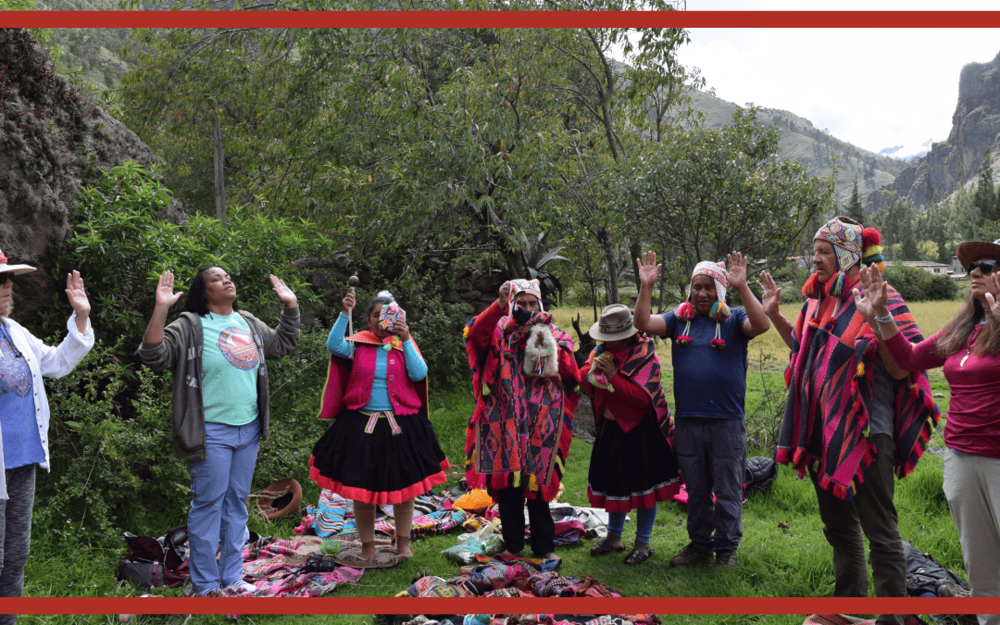

How Soul Loss Happens (and Why You May Be Carrying Energy That Isn’t Yours)
How Soul Loss Happens (and Why You May Be Carrying Energy That Isn’t Yours) Have you ever felt like part of you disappeared after a painful experience?Or that no matter how much inner work you do, something still feels missing? You’re not imagining things. In shamanic...
What Is the Natural Trauma Release Method™? A Modern Shamanic Approach to Feeling Whole Again
What Is the Natural Trauma Release Method™? A Modern Shamanic Approach to Feeling Whole Again In a world where therapy, coaching, and self-help books are everywhere, more and more people are waking up to this truth: talking about the pain isn’t the same as...